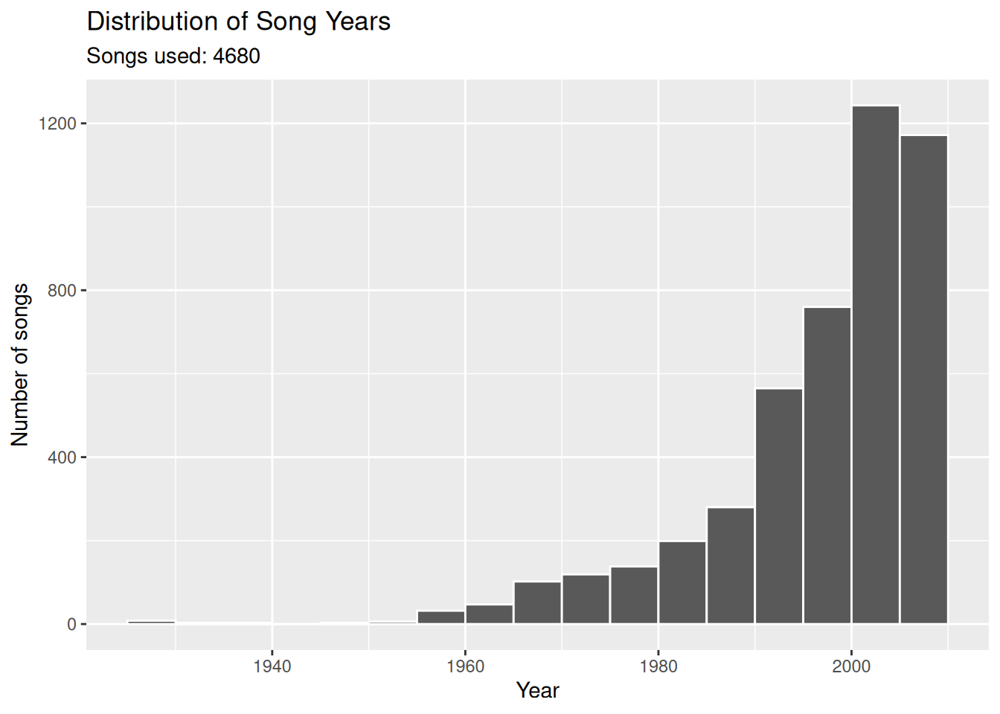
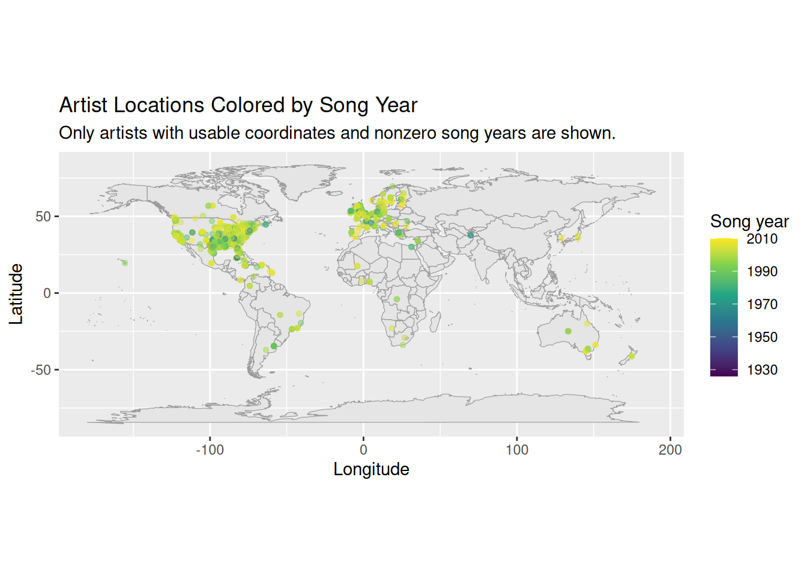
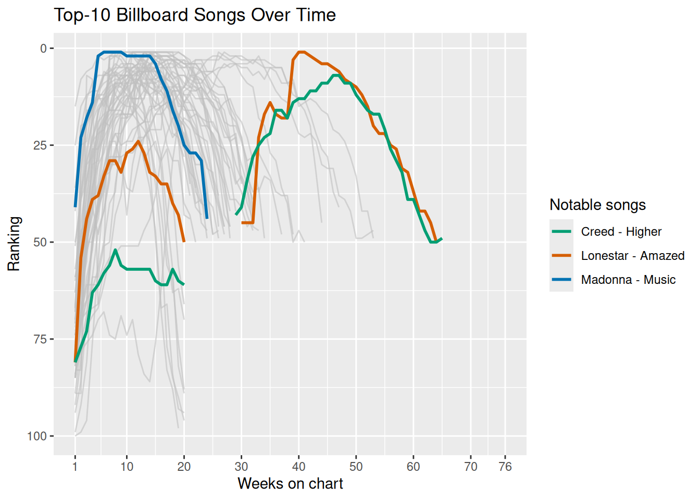

[1] "artist.familiarity" "artist.hotttnesss"
[3] "artist.id" "artist.latitude"
[5] "artist.location" "artist.longitude"
[7] "artist.name" "artist.similar"
[9] "artist.terms" "artist.terms_freq"
[11] "release.id" "release.name"
[13] "song.artist_mbtags" "song.artist_mbtags_count"
[15] "song.bars_confidence" "song.bars_start"
[17] "song.beats_confidence" "song.beats_start"
[19] "song.duration" "song.end_of_fade_in"
[21] "song.hotttnesss" "song.id"
[23] "song.key" "song.key_confidence"
[25] "song.loudness" "song.mode"
[27] "song.mode_confidence" "song.start_of_fade_out"
[29] "song.tatums_confidence" "song.tatums_start"
[31] "song.tempo" "song.time_signature"
[33] "song.time_signature_confidence" "song.title"
[35] "song.year" Analyzing Music Data
Rows: 10,000
Columns: 10
$ artist.familiarity <dbl> 0.58179377, 0.63063004, 0.48735679, 0.63038233, 0.6…
$ artist.hotttnesss <dbl> 0.4019975, 0.4174996, 0.3434284, 0.4542312, 0.40172…
$ artist.id <chr> "ARD7TVE1187B99BFB1", "ARMJAGH1187FB546F3", "ARKRRT…
$ artist.latitude <dbl> 0.00000, 35.14968, 0.00000, 0.00000, 0.00000, 0.000…
$ artist.location <dbl> 0, 0, 0, 0, 0, 0, 0, 0, 0, 0, 0, 0, 0, 0, 0, 0, 0, …
$ artist.longitude <dbl> 0.00000, -90.04892, 0.00000, 0.00000, 0.00000, 0.00…
$ artist.name <chr> "Casual", "The Box Tops", "Sonora Santanera", "Adam…
$ artist.similar <dbl> 0, 0, 0, 0, 0, 0, 0, 0, 0, 0, 0, 0, 0, 0, 0, 0, 0, …
$ artist.terms <chr> "hip hop", "blue-eyed soul", "salsa", "pop rock", "…
$ artist.terms_freq <dbl> 1.0000000, 1.0000000, 1.0000000, 0.9885839, 0.88728…# A tibble: 8 × 9
artist.name artist.location artist.latitude artist.longitude artist.terms
<chr> <dbl> <dbl> <dbl> <chr>
1 Casual 0 0 0 hip hop
2 The Box Tops 0 35.1 -90.0 blue-eyed s…
3 Sonora Santanera 0 0 0 salsa
4 Adam Ant 0 0 0 pop rock
5 Gob 0 0 0 pop punk
6 Jeff And Sheri … 0 0 0 southern go…
7 Rated R 0 0 0 breakbeat
8 Tweeterfriendly… 0 0 0 post-hardco…
# ℹ 4 more variables: artist.familiarity <dbl>, artist.hotttnesss <dbl>,
# song.title <dbl>, song.year <dbl># A tibble: 4 × 6
variable minimum first_quartile median third_quartile maximum
<chr> <dbl> <dbl> <dbl> <dbl> <dbl>
1 artist.familiarity 0 0.468 0.564 0.668 1
2 artist.hotttnesss 0 0.325 0.381 0.454 1.08
3 song.year 0 0 0 2000 2010
4 song.tempo 0 97.0 120. 144. 263. 
# A tibble: 6 × 2
column placeholder_rows
<chr> <int>
1 artist.location 9999
2 release.name 9989
3 song.title 9992
4 song.year 5320
5 artist.familiarity 24
6 artist.hotttnesss 496# A tibble: 2 × 2
coordinate_status artists
<chr> <int>
1 Placeholder 2493
2 Usable 1418Warning: `fortify(<map>)` was deprecated in ggplot2 4.0.0.
ℹ Please use `map_data()` instead.
